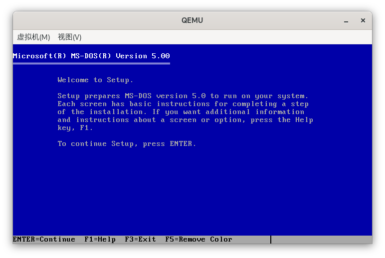
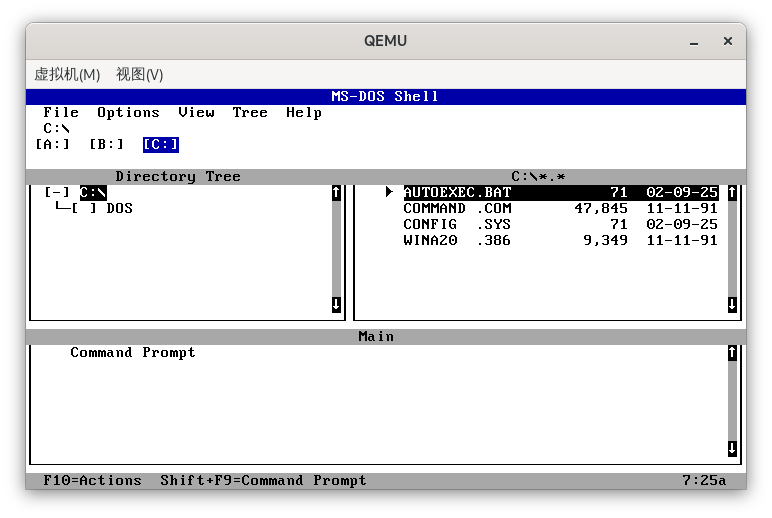

前言
也是学到了Masm中运用int 13h对软盘进行读写这一部分了。不过，DOSBox虽然支持挂载虚拟软驱，但并不支持软盘启动。对此，还是决定把Masm开发环境迁移到QEMU虚拟机上。
安装QEMU
在笔者使用的Arch Linux上使用pacman安装qemu尤为方便，只需要:1
sudo pacman -S qemu-full
接下来，我们为虚拟机创建一个硬盘镜像，500MB的应该就足够了:1
2qemu-img create -f qcow2 /path/to/c.img 500M
# /path/to/* 替换成自己的路径，下同
随后，到这个这个网站https://winworldpc.com/product/ms-dos/50下载MS-DOS 5.0的镜像，这里我选择的是单软盘的版本。
用QEMU载入前面创建的硬盘镜像和下载的软盘镜像:1
qemu-system-i386 -m 32M -hda c.img -fda ms-dos-floppy.img -boot a
这里我们指定内存为32MB，前面创建的硬盘镜像c.img为C盘，下载的MS-DOS软盘镜像ms-dos-floppy.img为A盘，并以A盘作为启动盘，各参数可以根据实际自行调整。

于是我们就进入了安装MS-DOS的界面了，过程没什么好说的，提供的英文指示也非常通俗易懂。

安装完成后重启，如果进入了这个MS-DOS Shell就说明安装成功了。
配置开发环境
首先这个MS-DOS Shell没什么大用。先退出，然后到根目录下的自启动脚本autoexec.bat把它拿掉即可。
接下来，我们把Masm的开发环境全部迁移过来。
先回到DOSBox，在其中新建一个a.img的软盘镜像:1
imgmake a.img -t floppy
接着，挂载这个镜像到A盘:1
imgmount A a.img -t floppy
随后把开发环境的文件全都copy到A盘。
然后启动QEMU，并把a.img挂载为QEMU的A盘:1
qemu-system-i386 -m 32M -hda c.img -fda a.img -boot c
再把A盘里的文件copy到C盘，并在autoexec.bat配置一下环境变量，即可。
DOSBox
至此，我们已经正式完成了开发环境由DOSBox到QEMU的转移。不过，也没必要把物理机上的DOSBox删掉。我们可以利用DOSBox在物理机上读写a.img，从而实现物理机与QEMU虚拟机的交互与文件传递。具体的操作上面也已经演示过了，不再赘述。